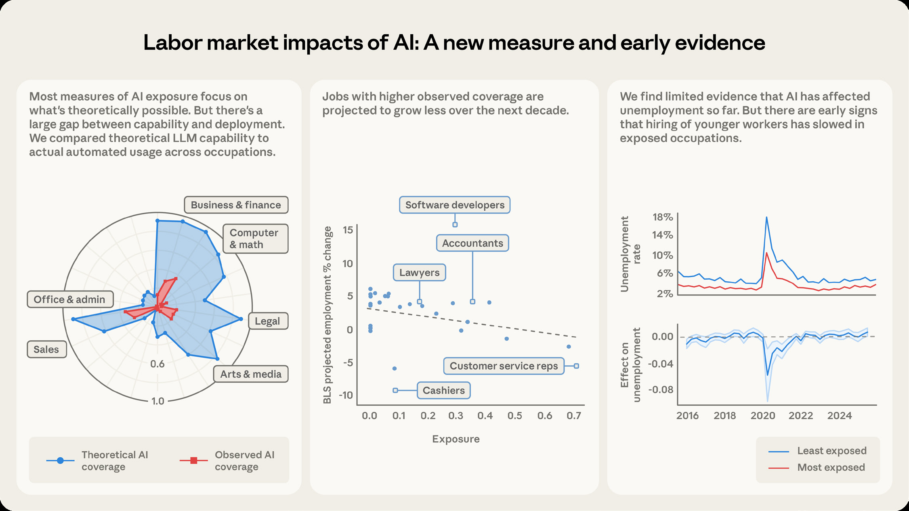
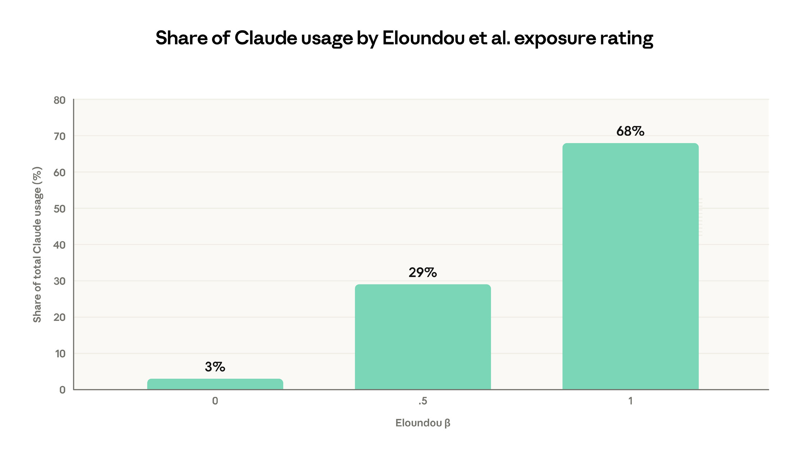
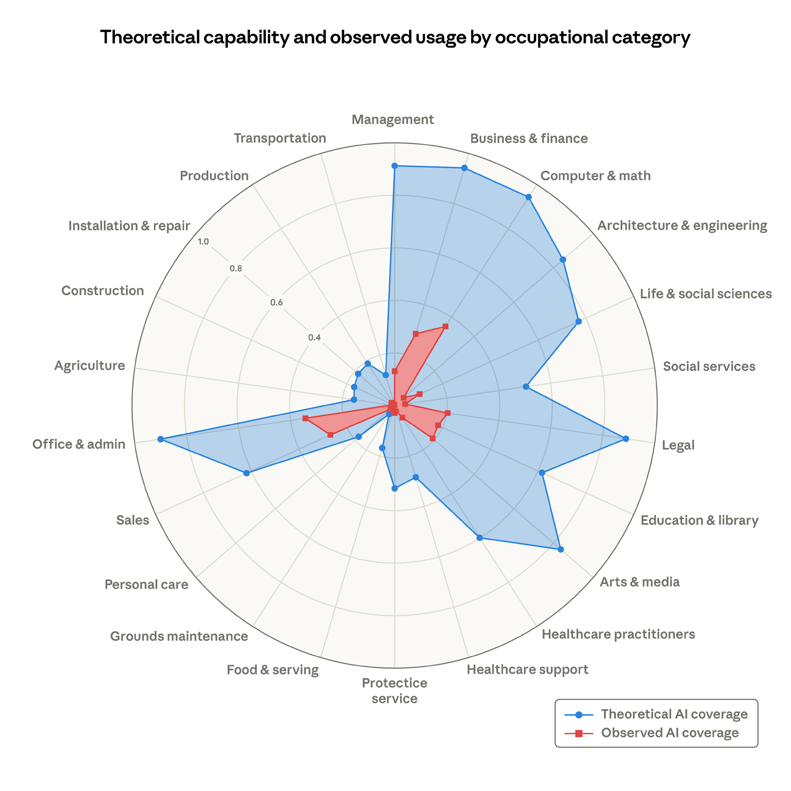
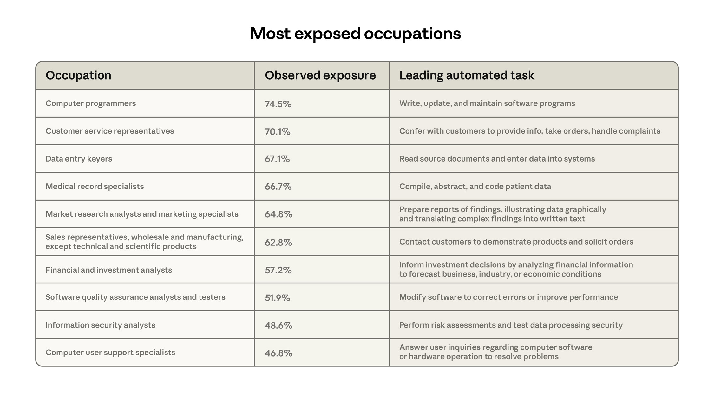
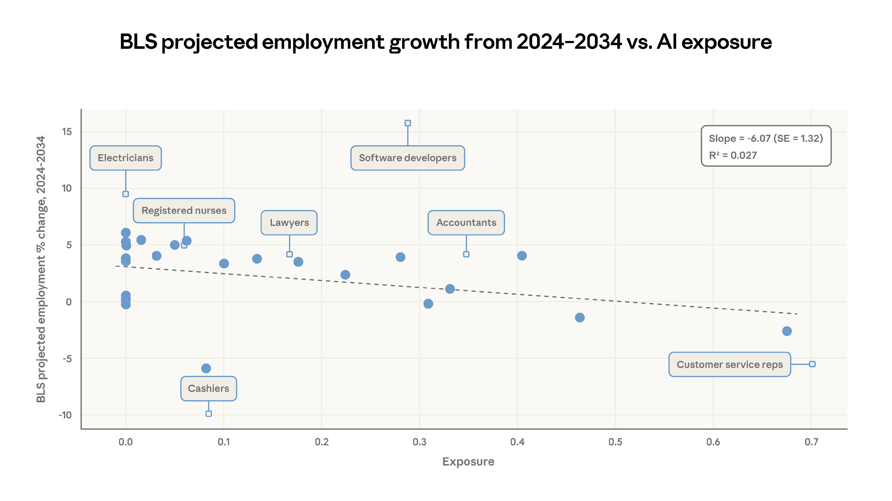
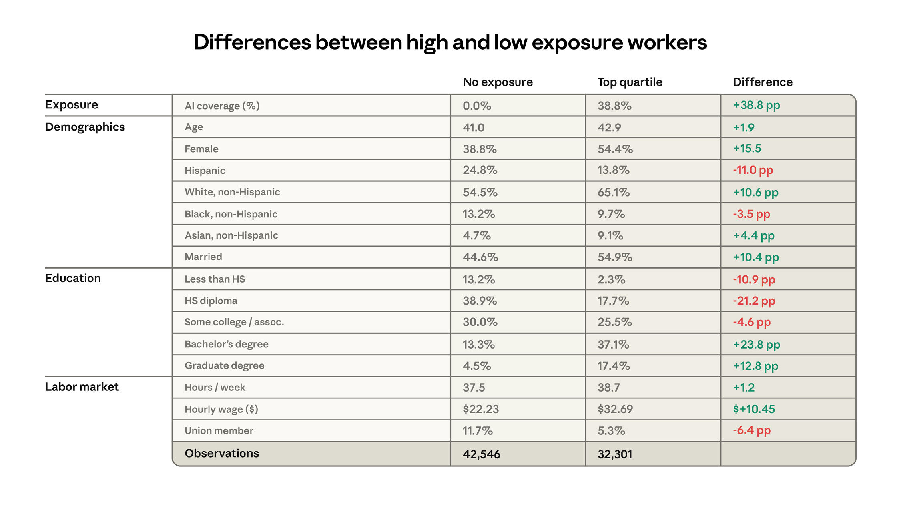
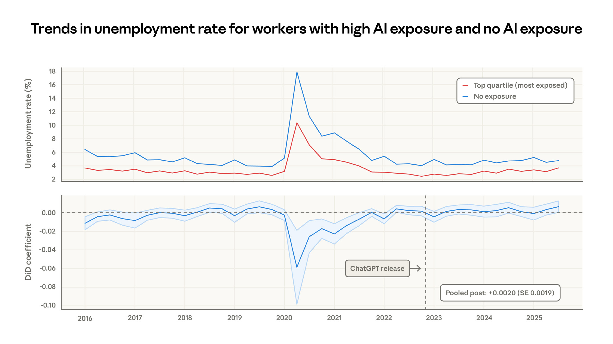
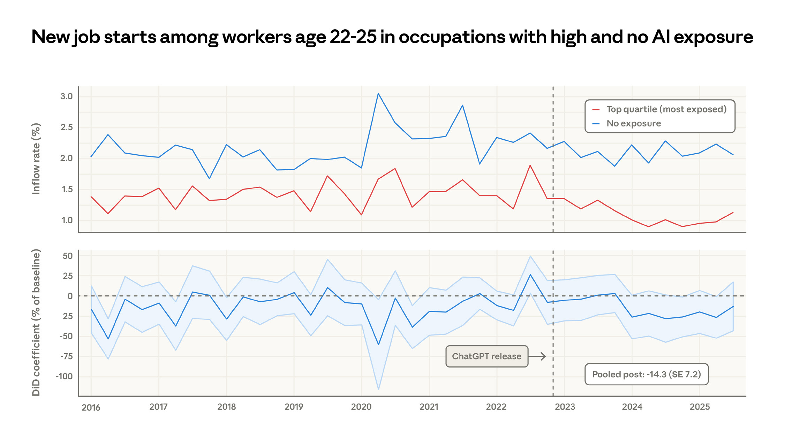

AI가 노동 시장에 미치는 영향 AI가 노동 시장에 미치는 영향: 새로운 조치 및 초기 증거 작성자 Maxim Massenkoff 및 Peter McCrory 감사의 말 Ruth Appel, Tim Belonax, Keir Bradwell, Andy Braden, Dexter Callender III, Miriam Chaum, Madison Clark, Jake Eaton, Deep Ganguli, Kunal Handa, Ryan Heller, Lara Karadogan, Jennifer Martinez, Jared Mueller, Sarah Pollack, David Saunders, Carl 드 토레스, 잭 클락. 또한 이 문서의 이전 버전에 대한 피드백을 주신 Martha Gimbel, Anders Humlum, Evan Rose 및 Nathan Wilmers에게도 감사드립니다. 2026년 3월 5일 게시됨
2 AI가 노동 시장에 미치는 영향 주요 결과 • 이론적 LLM 기능과 실제 사용 데이터를 결합하고 자동화(보강이 아닌) 및 업무 관련 사용에 더 큰 가중치를 부여하는 AI 대체 위험, 관측된 노출에 대한 새로운 척도를 도입합니다. • AI는 이론적인 기능에 도달하기에는 아직 멀었습니다. 실제 적용 범위는 실현 가능한 것의 일부로 남아 있습니다. BLS는 관찰된 노출이 더 높은 직종은 2034년까지 성장이 둔화될 것으로 예상합니다. 더 많은 교육 수준 및 더 높은 임금 • 2022년 말 이후로 노출도가 높은 근로자의 실업률이 체계적으로 증가한 것은 발견되지 않았습니다. 하지만 노출된 직종에서 젊은 근로자 채용이 둔화되었다는 암시적인 증거를 찾았습니다. 방법 개요 및 일부 주요 결과 작업 적용 범위와 AI가 실업에 미치는 영향을 측정하는 방법은 아래를 참조하세요.

3 AI가 노동 시장에 미치는 영향 AI의 급속한 확산으로 인해 AI가 노동 시장에 미치는 영향을 측정하고 예측하는 연구가 활발해지고 있습니다. 그러나 과거의 접근 방식을 보면 겸손할 이유가 있습니다. 예를 들어, 일자리 이탈 가능성을 측정하려는 눈에 띄는 시도에서는 미국 일자리의 약 4분의 1이 취약한 것으로 확인되었지만 10년이 지난 후에도 이러한 일자리의 대부분은 건전한 고용 성장을 유지했습니다. 정부 자체의 직업 성장 예측은 방향성이 정확하기는 하지만 과거 추세에 대한 선형 외삽 이상의 예측 가치를 거의 추가하지 못했습니다. 돌이켜보면, 주요 경제 혼란이 노동 시장에 미치는 영향은 불분명한 경우가 많습니다. 산업용 로봇의 고용 효과에 대한 연구는 반대되는 결론에 도달했으며 중국 무역 충격으로 인한 일자리 감소 규모에 대해서는 계속해서 논쟁이 벌어지고 있습니다.1 이 논문에서 우리는 AI가 노동 시장에 미치는 영향을 이해하기 위한 새로운 프레임워크를 제시하고 이를 초기 데이터와 비교하여 테스트하여 AI가 현재까지 고용에 영향을 미쳤다는 제한된 증거를 찾습니다. 우리의 목표는 AI가 고용에 어떤 영향을 미치는지 측정하기 위한 접근 방식을 확립하고 이러한 분석을 주기적으로 재검토하는 것입니다. 이 접근 방식은 AI가 노동 시장을 재편성할 수 있는 모든 채널을 포착하지는 못하지만, 의미 있는 효과가 나타나기 전에 지금 이러한 기반을 마련함으로써 향후 연구 결과가 사후 분석보다 경제 혼란을 더 확실하게 식별할 수 있기를 바랍니다. AI의 영향은 명백할 가능성이 있습니다. 이 프레임워크는 효과가 모호할 때 가장 유용하며, 대체가 가시화되기 전에 가장 취약한 일자리를 식별하는 데 도움이 될 수 있습니다.
반사실 효과가 크고 갑작스러울 때 인과 추론이 더 쉽습니다. 코로나19 팬데믹과 그에 수반되는 정책 조치는 경제적 혼란을 너무 심각하게 야기하여 많은 질문에 대해 정교한 통계적 접근 방식이 불필요했습니다. 예를 들어, 팬데믹 초기 몇 주 동안 실업률이 급격히 증가하여 다른 설명을 할 여지가 거의 없었습니다. 그러나 AI의 영향은 코로나바이러스보다는 인터넷이나 중국과의 무역에 더 가깝습니다. 총 실업률 데이터에서는 그 효과가 즉시 명확하지 않을 수 있습니다. 무역 정책 및 경기 순환과 같은 요인으로 인해 추세선에 대한 해석이 흐려질 수 있습니다.
4 AI가 노동 시장에 미치는 영향 한 가지 일반적인 접근 방식은 혼란스러운 요인으로부터 AI의 영향을 분리하기 위해 AI에 노출된 근로자, 회사 또는 산업 간의 결과를 비교하는 것입니다.2 노출은 일반적으로 작업 수준에서 정의됩니다. 예를 들어 AI는 숙제를 채점할 수 있지만 교실을 관리할 수는 없으므로 교사는 전체 작업을 원격으로 수행할 수 있는 근로자보다 노출이 적은 것으로 간주됩니다. 우리의 작업은 직업에 집계하기 전에 이론적 AI 기능과 실제 사용에 대한 측정을 통합하는 작업 기반 접근 방식을 따릅니다.³
노출 측정 우리의 접근 방식은 세 가지 소스의 데이터를 결합합니다. • 미국의 약 800개 고유 직업과 관련된 작업을 열거하는 O*NET 데이터베이스. • 당사 자체 사용 데이터(인류 경제 지수로 측정). • Eloundou 등의 작업 수준 노출 추정치. (2023)은 LLM이 작업을 최소 두 배 빠르게 수행하는 것이 이론적으로 가능한지 여부를 측정합니다. 그림 1: Eloundou 등의 Claude 사용 비율. 작업 노출 등급 이 그림은 이론적 AI 노출을 기준으로 그룹화된 O*NET 작업 전체에 분포된 Claude 사용량을 보여줍니다. β=1(LLM만으로 완전히 실행 가능) 등급의 작업은 관찰된 Claude 사용량의 68%를 차지하는 반면, β=0(실행 불가능) 등급의 작업은 단 3%를 차지합니다. Claude 사용량에 대한 데이터는 이전 4개의 경제 지수 보고서에서 가져온 것입니다.

5 AI Eloundou 등의 지표인 β가 노동 시장에 미치는 영향은 간단한 규모로 작업의 점수를 매깁니다. 즉, LLM만으로 작업 속도를 두 배로 늘릴 수 있는 경우 1, LLM 위에 구축된 추가 도구나 소프트웨어가 필요한 경우 0.5, 그렇지 않은 경우 0입니다.⁴ 실제 사용량이 이론적 능력에 미치지 못하는 이유는 무엇입니까? 이론적으로 가능한 일부 작업은 모델 제한으로 인해 사용량에 표시되지 않을 수 있습니다. 법적 제약, 특정 소프트웨어 요구 사항, 사람의 확인 단계 또는 기타 장애물로 인해 확산이 느려지는 경우도 있습니다. 예를 들어, Eloundou et al. "약물 리필을 승인하고 약국에 처방 정보 제공"을 완전히 노출된 것으로 표시합니다(β=1). 이론적으로 LLM에 의해 속도가 빨라질 수 있다는 점에서 평가가 올바른 것처럼 보이지만 Claude가 이 작업을 수행하는 것을 관찰하지 못했습니다. 즉, 이론적 능력과 실제 사용량에 대한 이러한 측정은 높은 상관관계가 있습니다. 그림 1에서 볼 수 있듯이, 이전 4개의 경제 지수 보고서에서 관찰된 작업의 97%는 Eloundou 등이 이론적으로 실현 가능한 것으로 평가한 범주에 속합니다. (β=0.5 또는 β=1.0).
직업적 노출에 대한 새로운 척도 우리의 새로운 측정인 관찰된 노출은 LLM이 이론적으로 속도를 높일 수 있는 작업과 전문적인 환경에서 실제로 자동화된 사용을 확인하는 작업을 정량화하기 위한 것입니다. 이론적 능력은 훨씬 더 광범위한 작업을 포괄합니다. 그 격차가 어떻게 줄어드는지 추적함으로써 관찰된 노출은 경제적 변화가 나타날 때 이에 대한 통찰력을 제공합니다. 우리의 측정은 직업 영향을 예측할 수 있다고 생각되는 AI 사용의 여러 측면을 질적으로 포착합니다. 다음과 같은 경우 직업의 노출도가 더 높아집니다. • 해당 작업이 이론적으로 AI로 가능합니다. • 해당 작업이 인류 경제 지수에서 상당한 용도로 사용됩니다⁵ • 해당 작업이 업무 관련 맥락에서 수행됩니다. • 자동화된 사용 패턴 또는 API 구현에서 상대적으로 높은 비중을 차지합니다. • AI에 영향을 받는 작업이 전체 역할에서 더 큰 비중을 차지합니다⁶
6 AI가 노동 시장에 미치는 영향 우리는 부록에 수학적 세부 사항을 제공합니다.7 Claude 트래픽에서 충분한 업무 관련 사용을 본 경우 LLM을 사용하여 이론적으로 가능한 작업을 포함된 것으로 계산합니다. 그런 다음 작업이 수행되는 방식을 조정합니다. 완전 자동화된 구현은 전체 가중치를 받고, 보강 사용은 절반의 가중치를 받습니다. 마지막으로, 작업 수준 적용 범위 측정값은 각 작업에 소요된 시간의 비율로 가중된 직업 수준으로 평균화됩니다. 그림 2: 직업 범주별 이론적 능력 및 관찰된 노출 이 그림은 LLM이 이론적으로 수행할 수 있는 직무 비율(파란색 영역)과 사용 데이터에서 파생된 자체 직무 범위 측정(빨간색 영역)을 보여줍니다.

7 AI가 노동 시장에 미치는 영향 그림 2는 Eloundou 등의 β와 비교하여 관찰된 노출(빨간색)을 보여줍니다. (파란색)은 광범위한 직업 범주별로 그룹화하여 플랫폼에서의 이론적 사용과 실제 사용의 차이를 보여줍니다. 우리는 먼저 시간 분율 측정에 의한 직업 수준 가중치를 평균한 다음 총 고용에 대한 직업 범주 가중치를 평균하여 이를 계산합니다. 예를 들어, β 측정값은 컴퓨터 및 수학(94%) 및 사무 및 행정(90%) 직종의 대부분 작업에서 LLM 보급 범위를 보여줍니다. 인류 경제 지수(Anthropic Economic Index)의 LLM 사용을 묘사하는 빨간색 영역은 사람들이 전문적인 환경에서 Claude를 어떻게 사용하고 있는지 보여줍니다. 보도에 따르면 AI는 이론적 역량에 도달하기에는 거리가 멀다. 예를 들어, Claude는 현재 컴퓨터 및 수학 카테고리의 전체 작업 중 33%만을 다루고 있습니다. 기능이 발전하고 채택이 확산되고 배포가 심화됨에 따라 빨간색 영역이 파란색 영역을 덮을 정도로 커집니다. 드러나지 않은 넓은 지역도 있습니다. 물론 나무 가지치기, 농기계 작동과 같은 실제 농업 작업부터 법정에서 고객을 변호하는 것과 같은 법적 작업에 이르기까지 많은 작업은 AI의 범위를 벗어납니다. 그림 3은 이 법안에 따라 가장 많이 노출된 10개 직업을 보여줍니다. Claude가 코딩에 광범위하게 사용됨을 보여주는 다른 데이터와 연계하여 컴퓨터 그림 3: 가장 많이 노출된 직업 이 그림은 작업 적용 범위 측정을 사용하여 가장 많이 노출된 상위 10개 직업을 보여줍니다.

8 AI 프로그래머가 노동 시장에 미치는 영향은 75%로 가장 높고, 그 다음은 자사 API 트래픽에서 점점 더 많이 볼 수 있는 주요 업무인 고객 서비스 담당자입니다. 마지막으로, 소스 문서를 읽고 데이터를 입력하는 주요 작업을 자동화하는 데이터 입력 키어(Data Entry Keyers)가 67%를 차지합니다. 가장 낮은 수준에서는 작업자의 30%가 적용 범위가 0입니다. 해당 작업이 데이터에 너무 자주 나타나지 않아 최소 임계값을 충족할 수 없기 때문입니다. 이 그룹에는 예를 들어 요리사, 오토바이 정비사, 인명 구조원, 바텐더, 식기 세척기 및 탈의실 직원이 포함됩니다.
예상 일자리 증가 및 근로자 특성에 따라 노출을 추적하는 방법 미국 노동통계국(BLS)은 2024년부터 2034년까지 모든 직업에 대한 예상 고용 변화를 다루는 최신 세트를 2025년에 발표하는 정기적인 고용 예측을 발표합니다. 그림 4에서는 직업 수준 적용 범위 측정값을 해당 예측과 비교합니다. 그림 4: 2024~2034년 BLS 예상 고용 증가율과 관찰된 노출 비교 이것은 동일한 크기의 25개 저장소가 포함된 구간별 산점도입니다. 각 실선 점은 쓰레기통 중 하나에 대해 관찰된 평균 노출과 예상 고용 변화를 보여줍니다. 점선은 현재 고용 수준에 따라 가중치를 적용한 단순 선형 회귀 적합성을 보여줍니다. 작은 사각형은 설명을 위한 개별 직업 예시를 표시합니다.

9 AI가 노동 시장에 미치는 영향 현재 고용을 기준으로 가중치를 적용한 직업 수준에서의 회귀 분석에 따르면 노출이 더 많이 관찰된 직업의 경우 성장 전망이 다소 약한 것으로 나타났습니다. 보장 범위가 10% 포인트 증가할 때마다 BLS의 성장 예측은 0.6% 포인트씩 감소합니다. 이는 우리의 측정값이 노동 시장 분석가로부터 독립적으로 도출된 추정치를 추적한다는 점에서 어느 정도 검증을 제공하지만, 관계는 미미합니다. 흥미롭게도 Eloundou et al.을 사용하면 그러한 상관 관계가 없습니다. 혼자 측정해 보세요. 그림 5는 Current Population Survey의 데이터를 사용하여 ChatGPT가 출시되기 전인 2022년 8월부터 10월까지 3개월 동안 노출의 상위 1/4에 해당하는 근로자와 노출이 전혀 없는 근로자의 30%의 특성을 보여줍니다. 그룹은 매우 다릅니다. 더 많이 노출된 그룹은 여성일 가능성이 16% 포인트 더 높고, 백인일 가능성이 11% 포인트 더 높으며, 아시아인일 가능성이 거의 두 배 더 높습니다. 그들은 평균적으로 47% 더 많은 돈을 벌고, 더 높은 교육 수준을 갖고 있습니다. 예를 들어, 대학원 학위를 소지한 사람은 노출되지 않은 그룹의 4.5%이지만 가장 노출된 그룹의 17.4%로 거의 4배의 차이가 납니다. 그림 5: 노출도가 높은 근로자와 낮은 근로자의 차이, 현재 인구 조사 이 표는 노출도, 인구 통계, 교육 및 노동 시장 결과를 보여줍니다.

10 AI가 노동 시장에 미치는 영향 결과 우선 순위 지정 이러한 노출 측정을 통해 무엇을 찾아야 하는지에 대한 질문이 있습니다. 연구자들은 다양한 접근법을 취했습니다. 예를 들어, Gimbel et al. (2025)은 현재 인구 조사를 사용하여 직업 구성의 변화를 추적합니다. 그들의 주장은 AI로 인한 중요한 경제 구조 조정이 일자리 분포의 변화로 나타날 것이라는 것입니다. 1 (그들은 지금까지 변화가 눈에 띄지 않았다는 것을 발견했습니다.) Brynjolfsson et al. (2025)는 급여 처리 회사인 ADP의 데이터를 사용하여 연령대별로 고용 수준을 살펴본 반면, Acemoglu et al. (2022) 및 Hampole et al. (2025)는 각각 Burning Glass(현 Lightcast)와 Revelio의 채용 공고 데이터를 사용합니다. 실업이 경제적 피해의 가능성을 가장 직접적으로 포착하기 때문에 우리는 실업에 중점을 둡니다. 실업 상태인 근로자는 일자리를 원하지만 아직 일자리를 찾지 못했습니다. 이 경우 채용 공고와 고용이 반드시 정책 대응의 필요성을 나타내는 것은 아닙니다. 노출도가 높은 역할에 대한 채용 공고의 감소는 관련 직무의 공석 증가로 상쇄될 수 있습니다. AI로 인해 가장 해로운 노동 시장 발전에는 실직 근로자가 대안을 찾음에 따라 실업률이 증가하는 기간이 포함되어야 합니다. 현재 인구 조사는 실업자 응답자가 이전 직업과 산업을 보고하므로 이를 추적하는 데 매우 적합합니다.
초기 결과 우리는 다음으로 실업률 추세를 연구하여 직업 수준 측정을 현재 인구 조사의 응답자와 일치시킵니다.8 적용 범위 측정을 해석할 때 중요한 질문은 어떤 근로자가 치료를 받아야 하는지입니다. 단 10%의 업무 범위만으로도 고용 변화가 예상되어야 합니까? Gans와 Goldfarb(2025)는 O-링 모델이 직업을 가장 잘 설명하는 경우 모든 작업에 어느 정도 AI 침투가 있을 때만 고용 효과가 나타날 수 있음을 보여줍니다. Hampoleet al. (2025)은 평균 노출이 노동 수요를 감소시키지만 특정 작업에만 노출이 집중되면 이를 상쇄할 수 있다고 주장합니다. 그리고 Autor와 Thompson(2025)은 나머지 작업에 필요한 전문 지식 수준을 강조합니다. 단순성에 중점을 두고 큰 영향에 가장 관심이 있다는 점을 염두에 두고 우리는 영향을 느껴야 한다는 생각에 분석을 집중합니다.
11 평균 노출이 가장 높은 그룹에서 AI가 노동 시장에 가장 큰 영향을 미칩니다. 우리는 시간 가중 작업 적용 범위의 상위 1/4에 있는 근로자와 하위에 있는 근로자를 비교합니다. AI 기능이 빠르게 발전하는 경우 작업 범위는 낮은 범위 백분위수에 대해 높을 수 있으며, 이는 절대 임계값을 더 유용하게 만들 수 있습니다. 그러나 우리는 영향이 가장 많이 노출된 근로자에게 먼저 영향을 미친다고 가정하고 치료를 정의하는 데 사용하는 기준치를 다양하게 변경하는 결과를 제시합니다. 그림 6의 상단 패널은 노출 상위 4분위 근로자와 노출되지 않은 그룹에 대한 2016년 이후 실업률의 원시 추세를 보여줍니다. 코로나19 기간 동안 AI에 덜 노출된 근로자(대면 직업을 가질 확률이 높음)일수록 실업률이 훨씬 더 많이 증가했습니다. 이후 두 그룹의 추세는 대체로 유사했습니다. 하단 패널은 원시 데이터의 결과를 반영하여 차이 프레임워크에서 가장 많이 노출된 작업자와 가장 적게 노출된 작업자 간의 격차 크기를 측정합니다. ChatGPT 출시 이후 격차의 평균 변화는 작고 미미하여 노출이 더 많은 그룹의 실업률이 약간 증가했지만 그 효과는 0과 구별할 수 없음을 나타냅니다.9 그림 6: 노출이 관찰된 상위 4분위 및 AI 노출이 없는 근로자의 실업률 추세, 현재 인구 조사 상단 패널에는 노출의 상위 4분위(빨간색 선)에 있는 근로자와 노출이 전혀 없는 근로자의 30%에 대한 실업률이 표시됩니다. 하단 패널은 차이점 프레임워크에서 이 두 계열 간의 격차를 측정합니다.

12 AI가 노동 시장에 미치는 영향 이 프레임워크는 어떤 종류의 시나리오를 식별할 수 있습니까? 합동 추정치의 신뢰 구간을 기반으로 실업률이 1% 포인트 정도 차등적으로 증가하는 것을 감지할 수 있습니다(이는 새 데이터가 들어오면 변경되므로 단지 대략적인 추정치일 뿐입니다). 적용 범위 상위 10% 내의 근로자가 모두 해고된다면, 상위 4분위 그룹 내의 실업률은 3%에서 43%로 증가하고, 총 실업률은 4%에서 13%로 증가합니다. 규모는 작지만 여전히 우려되는 영향은 "사무직 근로자에 대한 대불황"과 같은 시나리오일 것입니다. 2007~2009년 대불황 동안 미국의 실업률은 5%에서 10%로 두 배나 증가했습니다. 노출의 상위 4분위수에서 이러한 두 배의 노출은 실업률을 3%에서 6%로 증가시킵니다. 이는 우리의 분석에서도 볼 수 있어야 합니다. 우리의 핵심 추정치는 덜 노출된 그룹과 비교하여 노출된 그룹의 실업률의 차등 변화를 기반으로 합니다. 모든 근로자의 실업률이 동시에 증가한다면, 우리는 이를 여전히 많은 작업에 영향을 주지 않는 AI 발전 때문이라고 생각하지 않을 것입니다. 특히 우려되는 그룹은 젊은 근로자들이다. Brynjolfssonet al. 는 22~25세 근로자의 노출된 직업에 대한 고용이 6~16% 감소했다고 보고했습니다. 그들은 이러한 감소가 주로 이직 증가보다는 고용 둔화에 따른 것이라고 보고합니다.10 우리는 노출된 직업에 종사하는 젊은 근로자의 실업률이 정체된 것으로 나타났습니다(부록 참조). 그러나 고용 둔화는 반드시 실업률 증가로 나타나지 않을 수 있습니다. 왜냐하면 많은 젊은 근로자가 CPS 데이터에 등록된 직업 없이 노동 시장에 진입하고 실업자로 표시되기보다는 노동 시장을 떠날 수 있기 때문입니다. 채용을 직접적으로 다루기 위해 우리는 CPS의 패널 차원을 사용하여 시간이 지남에 따라 노출이 많은 직업과 덜 노출된 직업에서 새 직장을 시작하는 젊은(22~25세) 근로자의 비율을 계산합니다. 그림 7은 젊은 근로자의 월간 취업 시작률(즉, 근로자가 이전 달에 가지지 않은 직업을 보고한 경우)을 노출도가 높은 직업과 낮은 직업에 진입하는지 여부로 나눈 값을 보여줍니다. 2020~2021년의 일부 큰 변화와는 별도로, 이 시리즈는 2024년에 시각적으로 분기되어 젊은 근로자가 노출된 직업에 고용될 가능성이 상대적으로 적습니다. 덜 노출된 직업의 구직률은 월 2%로 안정적으로 유지되는 반면, 가장 노출이 많은 직업에 대한 진입은 약 2% 감소합니다.
13 AI가 노동 시장에 미치는 영향은 0.5% 포인트입니다. ChatGPT 이후 시대의 평균 추정치는 노출된 직종에서 2022년에 비해 구직률이 14% 감소한 것으로 통계적으로 거의 유의미하지 않습니다. (25세 이상의 근로자에 대해서는 그러한 감소가 없습니다.) 이는 AI가 고용에 미치는 초기 영향에 대한 어느 정도 신호를 제공할 수 있으며 Brynjolfsson et al.의 연구 결과를 반영합니다. 그러나 몇 가지 대체 해석이 있습니다. 채용되지 않은 청년 근로자는 기존 직장에 남아 있을 수도 있고, 다른 직업을 가지거나 학교로 돌아갈 수도 있습니다. 데이터와 관련된 또 다른 주의 사항은 직업 전환이 설문 조사에서 잘못된 측정에 더 취약할 수 있다는 것입니다.11
토론 이 보고서는 AI가 노동 시장에 미치는 영향을 이해하기 위한 새로운 척도를 소개하고 실업과 고용에 미치는 영향을 연구합니다. 작업은 이론적으로 가능한 만큼 AI에 더 많이 노출됩니다. 그림 7: AI 노출이 관찰되고 노출이 없는 직종에서 22~25세 근로자 사이에서 새로운 일자리가 시작됩니다. 현재 인구 조사 상단 패널에는 노출이 많은 직종과 노출이 없는 직종에서 새로운 일자리를 시작하는 젊은 근로자의 비율이 표시됩니다. 하단 패널은 차이점 프레임워크에서 이 두 계열 간의 격차를 측정합니다.

14 AI가 LLM을 사용하여 노동 시장에 미치는 영향과 자동화된 업무 관련 사용 사례의 플랫폼에서 관찰되었습니다. 우리는 컴퓨터 프로그래머, 고객 서비스 담당자, 재무 분석가가 가장 많이 노출된 것으로 나타났습니다. 미국의 설문 조사 데이터를 사용하면 가장 많이 노출된 직업에 종사하는 근로자의 실업률에 영향을 미치지 않는 것으로 나타났습니다. 하지만 22~25세 근로자의 경우 해당 직업에 대한 채용이 약간 둔화되었다는 잠정적인 증거가 있습니다. 우리의 작업은 AI가 노동 시장에 미치는 영향을 분류하기 위한 첫 번째 단계입니다. 특히 적용 범위 및 반사실적 측면에서 이 보고서에서 취한 분석 단계가 고용 및 AI 사용에 대한 새로운 데이터가 등장함에 따라 쉽게 업데이트될 수 있기를 바랍니다. 확립된 접근법은 미래의 관찰자가 신호와 잡음을 분리하는 데 도움이 될 수 있습니다. 현재 작업에는 몇 가지 개선 사항이 있습니다. 우리의 사용 데이터는 향후 업데이트에 통합되어 경제에서 작업 및 직업 적용 범위에 대한 진화하는 그림을 형성할 것입니다. Eloundou et al. 2023년 초부터 LLM 기능과 연결되는 정도까지 지표가 업데이트될 수 있습니다. 그리고 젊은 근로자와 노동 시장 진입자에 대한 암시적인 결과를 고려할 때 중요한 다음 단계는 노출된 지역에서 교육 자격을 갖춘 최근 졸업생이 노동 시장을 어떻게 탐색하고 있는지 살펴보는 것일 수 있습니다.
데이터 가용성 작업 및 직무 수준에서 관찰된 범위는 https://huggingface에서 확인할 수 있습니다. co/datasets/Anthropic/EconomicIndex.
Bibtex 인용 @online{massenkoffmccrory2026labor, 저자 = {Maxim Massenkoff and Peter McCrory}, 제목 = {AI의 노동 시장 영향: 새로운 측정 및 초기 증거}, 날짜 = {2026-03-05}, 연도 = {2026}, url = {https://www.anthropic.com/research/labor-market-impacts}, }
15 AI가 노동시장에 미치는 영향
1 직무 오프쇼어 가능성: Blinder et al. (2009) 및 오지멕(2019); 정부 성장 예측: Massenkoff(2025); 로봇: Graetz 및 Michaels(2018) 및 Acemoglu 및 Restrepo(2020) 중국 충격: Autor et al. (2013) 및 Borusyak et al. (2022). 2 Brynjolfsson 외. (2025)는 Eloundou 등의 작업 노출 측정값을 사용하여 AI에 더 많이 노출된 직업과 덜 노출된 직업에 종사하는 근로자의 고용 추세를 비교합니다. (2023) 및 ADP의 급여 데이터. Johnston과 Makridis(2025)는 미국 행정 데이터를 사용하여 유사한 작업 기반 분석을 수행하지만 업계 수준으로 처리를 집계합니다. Huiet al. (2024)는 Upwork의 프리랜서 작업이 ChatGPT 및 고급 이미지 생성 도구의 출시에 어떻게 반응했는지 연구하여 각 도구 출시일 전후에 직접적인 영향을 받는 범주의 작업자와 영향을 받지 않는 범주의 작업자를 비교합니다. Hampoleet al. (2025) 역사적 대학 채용 네트워크를 활용한 기업 수준 AI 채택 도구: 역사적으로 졸업생이 나중에 AI 관련 역할에 들어간 대학에서 채용한 기업은 채택 비용이 더 낮았습니다. 3 우리의 업무 및 직업 수준 노출 측정은 다른 사용 데이터를 쉽게 통합하고 다른 국가로 확장할 수 있습니다. 우리는 시간이 지남에 따라 이 방법론을 새로운 설정에 적용할 계획입니다. 4 프레임워크에서 "직접 노출된" 작업은 LLM을 사용하면 절반의 시간 안에 완료할 수 있는 작업이었습니다(2,000 단어 입력 제한 및 최근 사실에 대한 액세스 없음). "도구에 노출된" 작업은 정보 검색 및 이미지 처리 등을 위해 소프트웨어에 액세스할 수 있는 LLM을 사용하여 동일한 속도 향상이 적용되는 작업이었습니다. 노출되지 않은 작업은 LLM을 사용하여 기간을 50% 이상 줄일 수 없습니다. 5 우리는 2025년 8월과 11월의 사용량을 다루는 이전 두 개의 인류 경제 지수 데이터 세트를 사용합니다. 의미상 매우 유사한 ONET 작업의 경우 개수를 여러 개로 나눕니다. 6 모든 단계에는 판단이 필요합니다. Eloundou et al. (2023) 측정값은 {0, 0.5, 1} 또는 다른 것으로 입력됩니까? "중요한" 사용을 결정하는 것은 무엇입니까? 사용량이 많은 작업과 매우 유사해 보이지만 너무 드물어서 특별히 선택할 수 없는 작업을 어떻게 처리합니까?
16 경제 지수에 대한 AI 샘플링이 노동 시장에 미치는 영향? 증강에 비해 자동화 워크플로가 얼마나 더 중요합니까? 부록에서 확장된 안심할 수 있는 결과는 이러한 질문에 대한 여러 해결 방법에 걸쳐 직업 노출의 Spearman(순위-순위) 상관관계가 매우 높다는 것입니다. 7 부록은 여기에서 확인할 수 있습니다. 8 O*NET-SOC 코드를 CPS의 occ1990 코드와 일치시키기 위해 Eckhart 및 Goldschlag(2025)에서 제공하는 횡단보도를 사용합니다. 9 우리는 부록에서 세 가지 방법으로 이를 더 자세히 살펴봅니다. 먼저, 치료를 정의하는 데 사용하는 백분위수 기준이 중앙값에서 95번째 백분위수까지 다양하게 적용되는지 묻습니다. 모든 경우에 영향은 평탄하거나 부정적입니다(노출된 그룹의 실업률이 감소한다는 의미). 다음으로 우리는 Brynjolfsson et al.에서와 같이 특히 젊은 근로자, 즉 22세에서 25세 사이의 근로자에 초점을 맞춥니다. (2025). 마지막으로 우리는 CPS 조사 응답 대신 노동부의 실업 보험 청구자에 대한 데이터를 사용하여 실업률을 측정합니다. NI 확장에서는 노출된 일자리에 대한 명확한 영향을 발견합니다. 10 저자가 여러 반사실적에 대한 추정치를 제공하기 때문에 이 범위는 넓습니다. 6% 포인트 하락은 고용 증가가 정체된 것과 반대되는 수치입니다. 16% 포인트 추정치는 같은 회사의 유사한 직원을 다른 직업과 비교하는 설계에서 나온 것입니다. 11 Fujita 등 참조. (2024). Acemoglu, Daron 및 Pascual Restrepo, "로봇과 일자리: 미국 노동 시장의 증거", Journal of Political Economy, 2020, 128 (6), 2188-2244. Acemoglu, Daron, David Autor, Jonathon Hazell 및 Pascual Restrepo, "인공 지능과 일자리: 온라인 공석의 증거", Journal of Labor Economics, 2022, 40 (S1), S293–S340. Appel, Ruth, Maxim Massenkoff, Peter McCrory, Miles McCain, Ryan Heller, Tyler Neylon 및 Alex Tamkin, "인류 경제 지수 보고서: 경제 기본 요소", 2026. Autor, David H, David Dorn 및 Gordon H Hanson, "중국 증후군: 미국 내 수입 경쟁의 지역 노동 시장 효과", American Economic Review, 2013, 103(6), 2121~2168. 작성자, David H, & Thompson, N. (2025). 전문적 지식. NBER 작업 보고서(w33941).
17 AI Blinder의 노동 시장 영향, Alan S et al., “How 많은 미국 일자리가 해외로 이전될 수 있습니까?”, World Economics, 2009, 10 (2), 41. Borusyak, Kirill, Peter Hull, and Xavier Jaravel, “Quasi-experimental Shift-Share Research Design,” The Review of Economic Studies, 2022, 89 (1), 181–213. Brynjolfsson, Erik, Bharat Chandar 및 Ruyu Chen, "탄광의 카나리아? 최근 인공 지능의 고용 효과에 관한 여섯 가지 사실", 디지털 경제, 2025. Eckhardt, Sarah 및 Nathan Goldschlag, "AI와 일자리: 최종 단어(다음 단어까지)", Economic Innovation Group(EIG), 2025년 8월. https://eig.org/ai-and-jobs-the-final-word/ Eloundou, Tyna, Sam Manning, Pamela Mishkin 및 Daniel Rock, "Gpts는 gpts입니다: 대규모 언어 모델의 노동 시장 영향 잠재력에 대한 초기 검토", arXiv 사전 인쇄 arXiv:2303.10130, 2023, 10. Fujita, S., Moscarini, G., & Postel-Vinay, F. (2024). 고용주 대 고용주 재배치를 측정합니다. 미국경제저널: 거시경제학, 16(3), 1-51. Gans, Joshua S. 및 Goldfarb, Avi, “O-Ring Automation,” NBER Working Paper No. 34639, 2025년 12월 SSRN에서 확인 가능: https://ssrn.com/abstract=5962594 Gimbel, Martha, Molly Kinder, Joshua Kendall, Maddie Lee, “노동 시장에 대한 AI의 영향 평가: 현재 상황”, 연구 보고서, The Budget Lab 2025년 10월 코네티컷주 뉴헤이븐 예일에서 이용 가능: https://budgetlab.yale.edu. Graetz, Georg 및 Guy Michaels, "작업 중인 로봇", 경제 및 통계 검토, 2018, 100(5), 753-768. Hampole, Menaka, Dimitris Papanikolaou, Lawrence DW Schmidt 및 Bryan Seegmiller, "인공 지능과 노동 시장", 기술 보고서, 미국 경제 연구국 2025. Handa, Kunal, Alex Tamkin, Miles McCain, Saffron Huang, Esin Durmus, Sarah Heck, Jared Mueller, Jerry Hong, Stuart Ritchie, Tim Belonax, Kevin K. Troy, Dario Amodei, Jared Kaplan, Jack Clark, Deep Ganguli, "AI로 수행되는 경제적 과제는 무엇입니까? 수백만 번의 Claude 대화를 통한 증거", 2025. Hui, Xiang, Oren Reshef 및 Luofeng Zhou, "고용에 대한 생성 인공 지능의 단기 효과: 온라인 노동 시장의 증거," Organization Science, 2024, 35(6), 1977~1989. Johnston, Andrew 및 Christos Makridis, "생성 AI의 노동 시장 효과: AI 노출의 차이 분석", SSRN 5375017, 2025에서 이용 가능. Massenkoff, Maxim, "직업 파괴는 얼마나 예측 가능합니까? 직업 전망의 증거," 2025. 작업 보고서. Ozimek, Adam, "Overboard on Offshore Fears", 2019. https://papers.ssrn.com/sol3/papers.cfm?abstract_ id=3777307 Tamkin, Alex 및 Peter McCrory, "Claude 대화를 통한 AI 생산성 향상 추정", 2025. Tomlinson, K., Jaffe, S., Wang, W., Counts, S., & 수리, S. (2025). AI 작업: 생성적 AI의 직업 적용 가능성을 측정합니다. arXiv 사전 인쇄 arXiv:2507.07935.